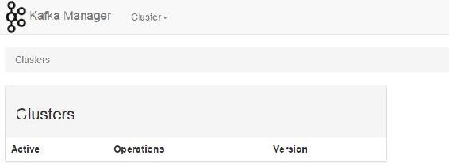

在实际应用中，我们经常需要了解集群的运行情况，如查看集群中代理列表、主题列表、消费组列表、每个主题对应的分区列表等，抑或是希望通过简单的Web界面操作来创建一个主题或是在代理负载不均衡时，手动执行分区平衡操作等。为了方便对Kafka集群的监控及管理，目前已有开源的Kafka监控及管理工具，如Kafka Manager、Kafka Web Console、KafkaOffsetMonitor等，读者也可以根据自己业务需要进行定制开发。本节只简单讲解Kafka Manager的安装应用。
Kafka Manager由yahoo公司开发，该工具可以方便查看集群主题分布情况，同时支持对多个集群的管理、分区平衡以及创建主题等操作。读者可访问https://github.com/yahoo/kafka- manager进行深入了解。
（1）下载编译Kafka Manager。进入GitHut官网搜索关键词“kafka-manager”即可查询到Kafka Manager的下载地址，具体地址为https://github.com/yahoo/kafka-manager/，直接点击“Clone or download”按钮进行下载。将下载的kafka-manager-master.zip文件上传到Linux服务器。用户也可以在Linux机器上执行以下命令在线下载Kafka Manager源码：
git clone https://github.com/yahoo/kafka-manager # 从GitHub上下载Kafka Manager源码Kafka Manager是用Scala语言开发的，通过sbt(Simple Build Tool)构建，sbt是对Scala或Java语言进行编译的一个工具，它类似于Maven，Gradle。截止到编写本书时，Kafka Manager是基于0.9.0.1版本的Kafka开发的，鉴于Kafka 0.9与Kafka-0.10版本的实现，该版本的Kafka Manager也能作为0.10.+版本的Kafka管理及监控工具，在Kafka Manager管理界面添加集群管理配置时，Kafka Version选0.9.0.1即可。待源码下载之后，进入Kafka Manager源码目录，会有一个sbt文件，执行以下命令进行Kafka Manager源码编译。
./sbt clean dist # 编译Kafka Manager源码编译过程会下载相关的jar文件，因此有些耗时。等源码编译完成后，在控制台输出的编译日志的最后几行信息如下：
[info] Your package is ready in /home/morton/.sbt/0.13/staging/17dfe5a6b216985c290a/
kafka-manager-master/target/universal/kafka-manager-1.3.2.1.zip
[info] [success] Total time: 170 s, completed 2017-1-15 14:23:45从控制台输出的编译日志信息可以看到，在编译时会在/home/用户名/路径下创建一个.sbt目录，编译后的文件存放在该目录相应子目录里，编译日志信息中的 morton 为编译 Kafka Manager源码的机器名。在编译过程中出现：
Download failed. Obtain the jar manually and place it at /home/morton/.sbt/launchers/
0.13.9/sbt-launch.jar表示在编译过程下载sbt-launch.jar文件遇到问题，请读者单独下载sbt-launch.jar相应版本并上传到/home/用户名/.sbt/launchers/0.13.9/目录下，再次执行编译命令。最终会在/home/用户名/.sbt/0.13/staging相应子目录下生成kafka-manager-1.3.2.1.zip文件，该文件就是用来对Kafka进行监控和管理的工具。若读者在编译时由于个人网络环境原因无法编译，可以直接在网络上下载该文件然后复制到服务器。将编译好的kafka-manager-1.3.2.1.zip文件解压到指定位置（这里解压到/usr/local/software/kafka-manager目录下）即完成安装。
（2）修改配置。进入Kafka Manager安装路径下的conf目录，打开application.conf文件，修改以下配置。将kafka-manager.zkhosts="kafka-manager-zookeeper:2181"配置项，修改为实际的ZooKeeper连接地址，例如这里修改为：
kafka-manager.zkhosts="172.117.12.61:2181,172.117.12.62:2181,172.117.12.63:2181"（3）启动Kafka Manager。进入bin目录下执行以下启动命令：
nohup ./kafka-manager -Dconfig.file=../conf/application.conf & # 启动Kafka ManagerKafka Manager默认请求端口是9000，在浏览器中输入安装Kafka Manager服务地址及9000端口访问Kafka Manager，如访问http://172.117.12.62:9000。Kafka Manager启动初始化界面如图2-3所示。

图2-3 Kafka Manager启动初始化界面
通过修改配置文件application.conf里http.port的值，或是通过命令行参数传递可以修改Kafka Manager访问端口。例如，在启动时指定端口为9001，启动命令如下：
nohup ./kafka-manager -Dhttp.port=9001 -Dconfig.file=../conf/application.conf &
# 修改Kafka Manager外部访问端口号为9001（4）关闭Kafka Manager。Kafka Manager没有提供关闭操作的执行脚本及命令，当希望关闭Kafka Manager时，可直接通过kill命令强制杀掉Kafka Manager进程。
查看Kafka Manager进程，输入jps命令，输出以下进程信息：
767 ProdServerStart
12422 QuorumPeerMain
13348 Kafka
895 Jps其中ProdServerStart即为Kafka Manager进程。通过kill命令关闭Kafka Manager：
kill -9 767 # 关闭Kafka Manager进程同时，由于Kafka Manager运行时有一个类似锁的文件RUNNING_PID，位于Kafka Manager安装路径bin同目录下，为了不影响下次启动，在执行kill命令后同时删除RUNNING_PID文件，命令如下：
rm –f RUNNING_PID # 删除Kafka Manager运行时的PID文件否则，在下次启动时会由于以下错误而导致Kafka Manager无法启动。错误信息如下：
This application is already running (Or delete /usr/local/software/kafka-manager/
RUNNING_PID file).若想在Kafka Manager监控中能展示更多的信息，则在Kafka启动时启动JMX。至此，Kafka Manager安装讲解完毕，对于Kafka Manager的相关操作将在5.8节进行介绍。